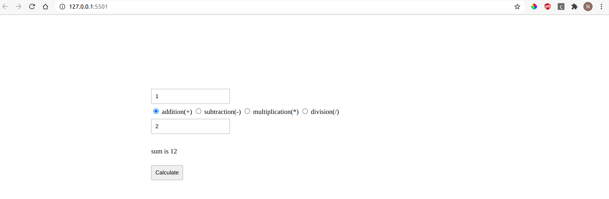
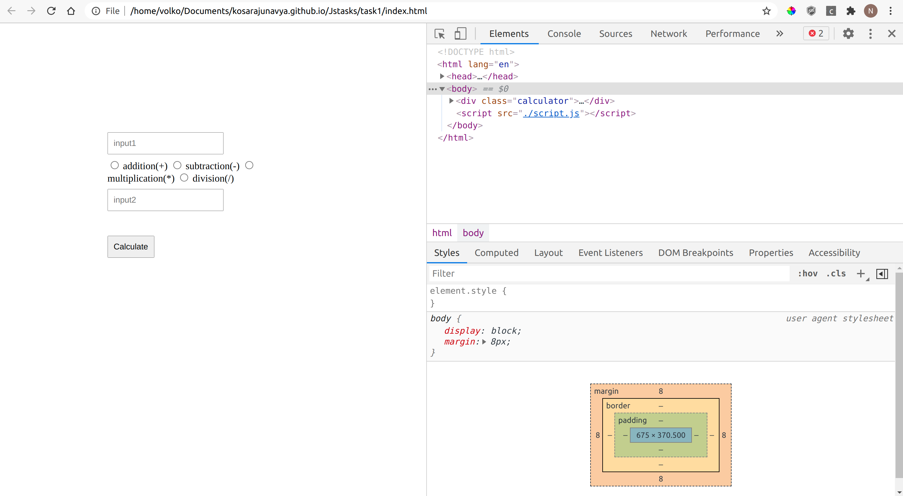
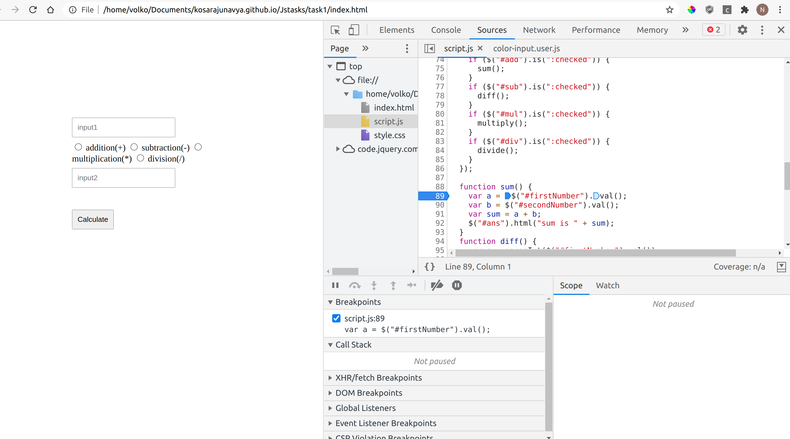
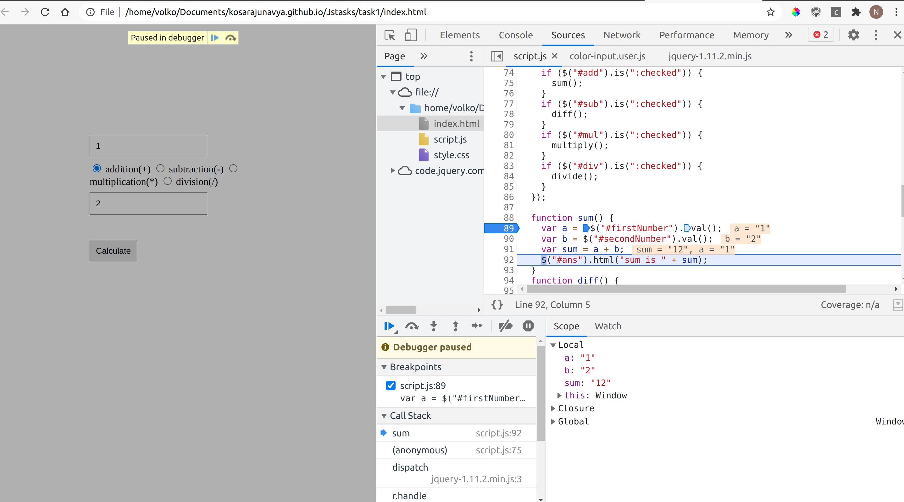
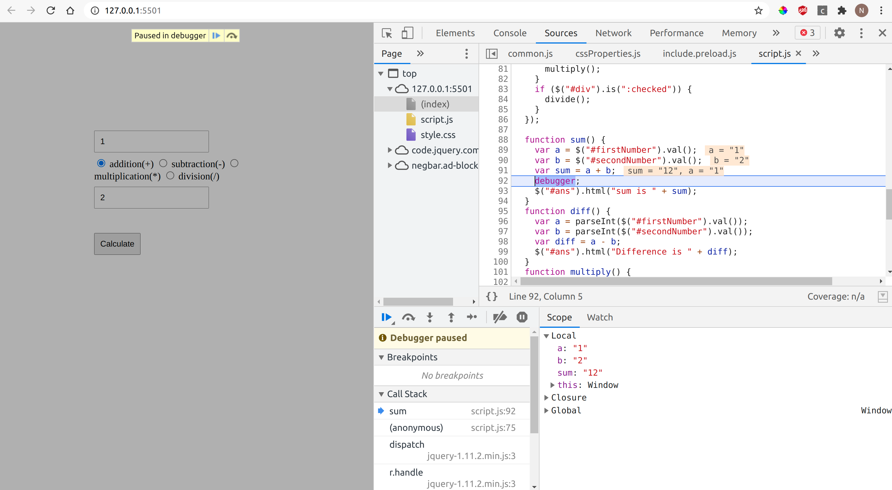

In this post you are going to learn about debugging methods. Debugging is one of the most important basic skill that every developer should learn. So here are few simple methods to find bugs without much time consumption.
GO to My code.blog for to get lot of blogs on technologies
Firstly we have to be aware of what type of debugging methods and tools that are available for all of us.
Pre-requisites:
Tools:
Most of the developers can use different browsers to connect with the world. The major tools are listed here, and now we are going to look at how to handle debugging with one of these tools.
Basically we have 3 methods of debugging our code, before going to these methods you should follow these steps to save your time with the dealing of bugs.
- Firstly analyse the entire code that you have written
- Then try to split your major issues into small sections
- Again read your code step by step and try to find the scope of bug
- Then follow the debugging methods to find your bug and fix it
Method 1: Using console.log()
Debugging is a process of finding bugs and fixing them. The initial method of finding bugs and to understand the reason for an issue and fix it is using the console.log method. This method is simple for less lines of code, but when it comes to bigger applications it become's a head banger for the developper.
Let us see a simple calculator application and analyse the debugging process in every method.
In the above results we got 1+2 = 12, instead of 3. So here is the bug, that we are not getting the required outcome. Let us go to our code and read the entire code again and write console.log on few places to know the scope of a bug.
Here is my source code for calculator application https://kosarajunavya.github.io/Jstasks/task1/index.html

See the results in console
Try to find out the bug here, and the problem is, in javascript if you want to add numericals then you have to parse them otherwise the js considers the numbers as strings. So the operator that we have used here is +. This operator adds the numericals and concatenates the string. So, to perform addition operation we have to parse them or use the number function to compute the actual numericals.

Now verify the results in your application
And the bug is fixed and we got expected results. The disadvantage of this method is that we have to read each and every line of the code and have to include a huge number of console.log(), to find the value and to analyse the scope of the bug. This could definitely beat the clock. Here is a solution for this, look down for next interesting method
Method 2: Using Breakpoints
- One of the effective and comfortable ways of debugging is using the breakpoints in the respective browser. Here are the steps to handle with the breakpoints in Chrome.
- Firstly analyse the scope of the bug, In this case the bug that we found is, in our calculator application instead of summing the numericals they are getting concatenated.
- So the issue raised on the computation part of the code so set a breakpoint near the function and run your code there you find the bug that you missed to parse the numericals.
- So go to your code and update that part
Step 1:
Go to your browser and open your console by hitting f12 in windows/linux, cmd J in mac.
Step 2:
Go to sources
Step 3:
Select script file
Step 4:
Firstly know your breakpoint for the respective source code that you want to debug, in this source code we have an issue on computaion part. So enable a breakpoint where actually the computaion part is happening. As per the requirement you can give as many as breakpoints to understand the flow of our source code.
Step 5:
Now this breakpoint is gonna hit when the calculate button is fireoff, so give the two inputs and click the calculate button. Now see what happens.

Step 6:
Now the debugger pause the code at a given breakpoint now observe the flow of code by hitting f10(which helps us to goto next line of the code).
Step 7:
Now observe the results, here we can see the results clearly where the functionality is going wrong in the scope section, like the results of the variables.
Step 8:
Now goto your code and and correct the bug.

Finally go to your console again and enable the breakpoint of your modified code, then again give the inputs and check the results.
Perfect! you got the expected results. So, with flexible steps we can resolve our issues with the help of breakpoints.
Method 3: Using Debugger keyword
Great! you came till here, Good to see you.Here is another cool method of debugging. So in this method you need to do only one step. Just write the debugger key word in your source code, that's all! very simple right.

Now go to browser, open console, give the inputs, hit the calculate button. Now you can see the debugger is enabled and paused the code along with results.
So you will get the scope of bug the go to your code editor, fix the bug. Again cross check your results.